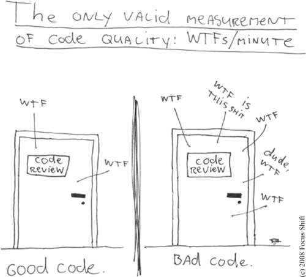

Clean Code
Antoine Vernois
Software Anarchist / Common Sens Consultant
blog: https://blog.crafting-labs.fr
twitter: @avernois
Why clean code in agile conf?
Why clean code?
What is a clean code ?
Clean code is not about beautifullness,
it's about goodness.Rebecca Wirfs-Brock
measuring cleanliness?
What can we do?
make it readable
unreadable
public List<int[]> getFlg() {
List<int[]> list1 = new ArrayList<int[]>();
for (int[] x : theList ) {
if (x[0] == 4)
list1.add(x);
}
return list1;
}
quite better!
public List<Cell> getFlaggedCells() {
List<Cell> flaggedCells = new ArrayList<Cell>();
for (Cell cell : gameBoard ) {
if (cell.isFlagged())
flaggedCells.add(cell);
}
return flaggedCells;
}
unreadable
public int score() {
int score = 0;
int rollIndex = 0;
for (int frame = 0; frame < NUMBER_OF_FRAMES; frame++) {
if (rolls[rollIndex] == MAX_PIN_DOWN) {
score += MAX_PIN_DOWN + rolls[rollIndex + 1] + rolls[rollIndex + 2];
rollIndex += 1;
} else if (rolls[rollIndex] + rolls[rollIndex + 1] == MAX_PIN_DOWN) {
score += MAX_PIN_DOWN + rolls[rollIndex + 2];
rollIndex += 2;
} else {
score += rolls[rollIndex] + rolls[rollIndex + 1];
rollIndex += 2;
}
}
return score;
}
extract code
quite better!
public int score() {
int score = 0;
int rollIndex = 0;
for (int frame = 0; frame < NUMBER_OF_FRAMES; frame++) {
if (isStrike(rollIndex)) {
score += MAX_PIN_DOWN + strikeBonus(rollIndex);
rollIndex += 1;
} else if (isSpare(rollIndex)) {
score += MAX_PIN_DOWN + spareBonus(rollIndex);
rollIndex += 2;
} else {
score += rolls[rollIndex] + rolls[rollIndex + 1];
rollIndex += 2;
}
}
return score;
}
Comments
false good idea
comments in real life
/*
* A comment to please checkstyle
*/
/*
* Set the port
*
* @params port
*/
public void setPort(Port port) {this.port=port}
...
} /* end for */
dao.flush();
default :
break;
} /* end switch */
} /* end if */
} /* end if */
} catch ...
Comments are always failureUncle Bob
Don't comment bad code. Rewrite it.Brian W. Kernighan, P.J. Plaugher
Comments: the exception
explain the Why!
Comments
Tests tells me What
Code tells me How
Comment, if needed, tells me why
Tests
The give you the confidence to change the code.
- one test, one assert
- readibility
- tests document your code
A test should tell you a story
Tests are first class citizen!
by the way
Test everything!
coupling
this is bad
a.getB().getC().doThings(); // this is bad
instead
Don't talk to stranger
a.doThings();
Demeter's Law
public class A {
private B b;
public void execute(int i) {
b = new B();
C c = new C();
if (i <= 3) {
b.executeB();
} else {
c.executeC();
}
}
}
bad
Dependency Injection
public class A {
private B b;
public A(B b) {
this.b = b;
}
public void execute(int i, C c) {
if (i <= 3) {
b.executeB();
} else {
c.executeC();
}
}
}
better
Dependency injection frameworks
they can be dangerous
Spring, I'm looking at you!coupling with external libraries
or thechnical stuff
like frameworks
don't.
really. Please.
don't let them go inside your business
use abstractions
or facades
try wishfull design
and you can do that for you whole application!
maybe, you should :)
some smells
- Singleton
- Tight coupling
- Untestable
- Premature Optimisation
- Indescriptive naming
- Duplication
lots of other suff
- SOLID principles are good for you
- never ever return null
- do not check exceptions
- do not think inheritance, think polymorphism
- do not think if/swicth, think polymorphism
- avoid singletons
a clean code
- is tested !
- has no duplication
- reveals its intention
- easy to read
B. Stroustrup, R. Jeffries, K. Beck, M. Feathers, W. Cunningham, ...
Clean Code - Robert Martin

Quotes
Any fool can write code that a computer can understand. Good programmers write code that human can understand.Martin Fowler
...if you're afraid to change something it is clearly poorly designed.Martin Fowler
Always code as if the guy who ends up maintaining your code will be a violent psychopath who knows where you live.Martin Golding
Read list


Thanks!
just come and talk to me.